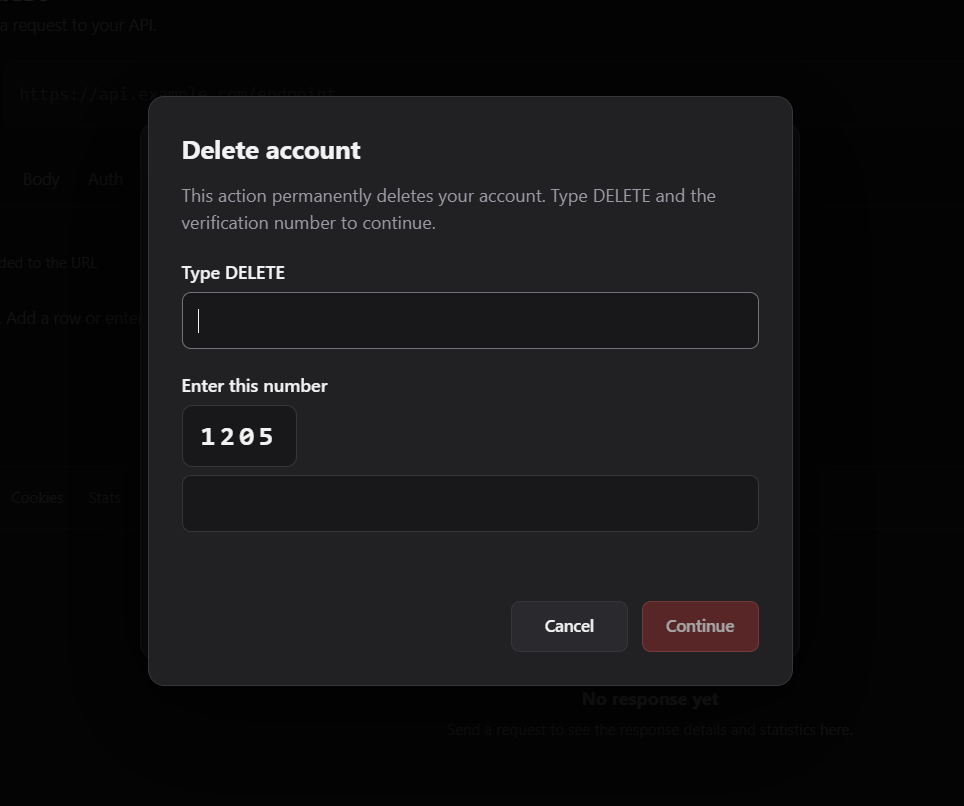

Account and security
Register, log in and understand which data stays in the browser and which data is kept by the server.
Registration
To create an account, choose Register in the auth dialog and provide an email address and password. APIDesk then sends the request to the backend to create the account.
Passwords should be at least 8 characters long. If the backend accepts the registration, the app continues with the email verification flow.
Email verification
After registration, the backend sends a verification email. The user must click the confirmation link before the account is considered fully active for login.
The UI shows a dedicated verification step and then returns the user to the login form once the email is confirmed.
Sign in
You can sign in with:
- Email and passwordStandard account login using your registered credentials.
- GoogleIf the backend is connected to Google OAuth, the login button starts the OAuth flow.
- GitHubIf the backend is connected to GitHub OAuth, the login button starts the GitHub sign-in flow.
When the backend confirms the login, APIDesk stores the current session and reuses it for protected API calls.
What is kept by the server and what stays in the browser
The server keeps account and session data: user identity, account creation data, verification state, and the backend-issued session tokens.
The browser keeps the tokens and local session state: the access token and refresh token are stored in sessionStorage together with the current user email.
Important: passwords are not kept in the browser as app state for later reuse. The browser keeps the session tokens it received after login, not the password itself.
This means the client can keep the current login active without storing the raw password in the browser memory or local state.
Session expiration
APIDesk uses short-lived access tokens and refresh tokens. When a protected request fails with a 401, the app attempts to refresh the session automatically.
If the refresh token is missing, invalid, or the refresh fails, APIDesk triggers a session expiry flow. The user is signed out and shown the login form again.
When the session expires, the browser clears the saved session data and the user must log in again.
Log out
Logging out is a separate confirmation step. The app asks the user to confirm before continuing.
When confirmed, APIDesk sends a logout request to the backend using the current refresh token, then clears the browser session state and returns to the unauthenticated state.
- Backend logout: invalidates the current session token on the server.
- Client logout: removes the stored tokens from
sessionStorage. - UI result: the user is returned to the login view and must sign in again to access protected data.
